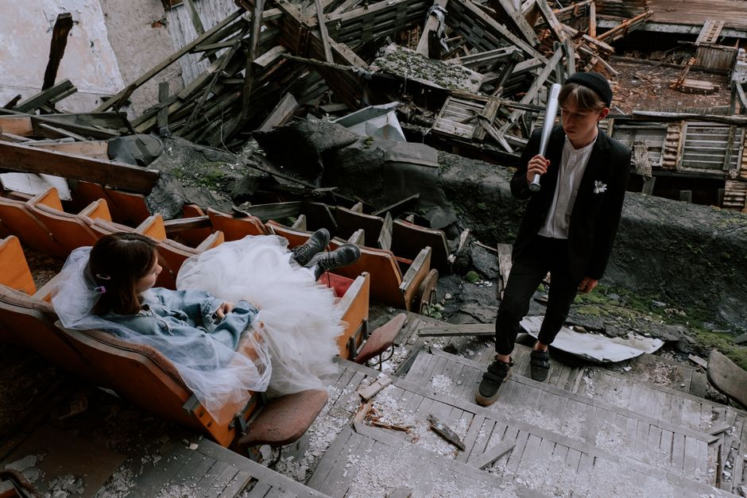

Cinematic Wedding Films for Your Greatest Adventure.
Year Day Atlas captures the authentic, unscripted moments of your celebration, delivering a cinematic wedding video you'll treasure forever. Discover the art of storytelling through motion.

Our Craft & Services
As a dedicated wedding and event videography company, we tailor our approach to document your unique narrative with elegance and authenticity.

Wedding Videography
Trust a professional wedding videographer to capture the subtle glances, joyous tears, and spoken vows. We blend into the background to film documentary-style memories that feel entirely genuine.

Event Videography
Beyond the altar, our event videography services cover rehearsal dinners, engagement parties, and grand milestones. Every celebration deserves to be documented with cinematic care and precision.

Cinematic Editing
Our post-production transforms raw footage into a breathtaking cinematic wedding video. With meticulous color grading, professional audio mixing, and narrative pacing, your wedding film becomes a masterpiece.

Our Mission
Year Day Atlas is an independent promotional operator introducing couples to the finest wedding and event videography company services available. We understand that your wedding day is a fleeting, beautiful rush of emotion, family, and celebration.
Our goal is to showcase the artistry required to produce a timeless wedding film. By highlighting exceptional documentary-style event videography, we help you discover professionals who honor your story, ensuring that when the day is done, you have a cinematic wedding video that allows you to relive those precious moments forever.
Check AvailabilityLove Stories on Film
Hear from couples who trusted professionals to capture their special day.
"The cinematic wedding video we received brought us straight back to the emotions of our big day. The editing, the music, the way they captured all the unscripted moments—it was absolute perfection."
— Sarah & James (2026)
"Having a professional wedding videographer was the best investment we made. They were unobtrusive yet somehow captured every single important moment of our celebration."
— Michael & David (2026)
"Their event videography team handled our multi-day celebration flawlessly. We never felt like we were on a film set, yet our wedding film looks like a high-end cinema release."
— Elena & Marcus (2026)
Frequently Asked Questions
Everything you need to know about preparing for your cinematic wedding video.
How far in advance should we book our wedding videographer?
What makes a cinematic wedding video different from traditional videography?
Do you provide raw footage along with the final wedding film?
How long does it take to receive our final cinematic wedding video?
Can you accommodate destination event videography?
Let's Tell Your Story
Ready to create a timeless wedding film? Reach out below to inquire about availability, learn more about event videography packages, and begin planning your cinematic wedding video.
Location
Washington, DC
Available for travel worldwide.